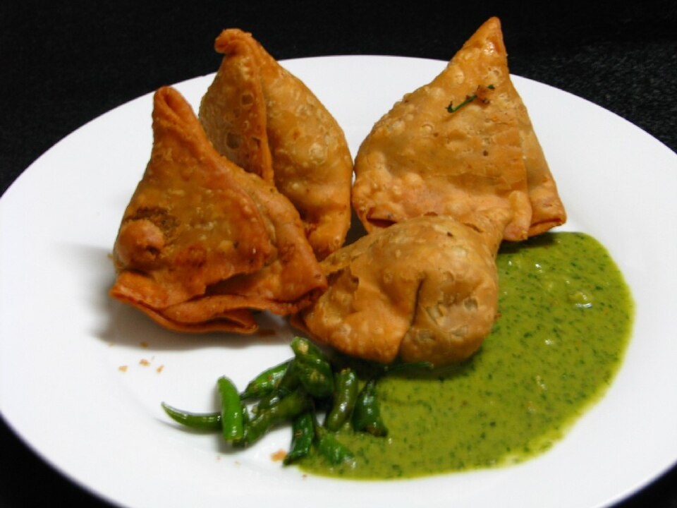

Aged Extra-Long Basmati
We select premium aged Himalayan basmati rice. Parboiled with whole cinnamon quills and bay leaves, the elongated grains remain slender, fragrant, and fluffy.
The legendary Dum Biryani of Hyderabad is an exercise in culinary patience and aromatic precision. Layered into heavy handi pots with partially cooked aged basmati rice, yogurt-marinated meats, caramelized crispy shallots, fresh mint leaves, and pure saffron milk, each vessel is sealed with dough and slow-steamed over gentle embers so every grain absorbs rich essence.

Why authentic dum biryani cannot be made by simple stir-frying.
We select premium aged Himalayan basmati rice. Parboiled with whole cinnamon quills and bay leaves, the elongated grains remain slender, fragrant, and fluffy.
Heavy vessels are sealed around their rims with whole-wheat dough. As steam builds, the meat tenderizes in its own juices while perfuming the rice layers above.
Every biryani is served with tangy, spicy mirchi ka salan (a nutty sesame-peanut gravy with green chilies) and cooling cucumber-onion yogurt raita.